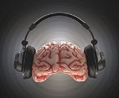
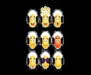

Music&Brain
HomePage

Music&Emotion
Quick Links
Ted-Talk(Between Music and Medicine)
Ted-Talk(How I found my myself through music)
Ted-Talk(Your Brain on improv)
Ted-Talk(Emotional Response to Music)
Link To Sources